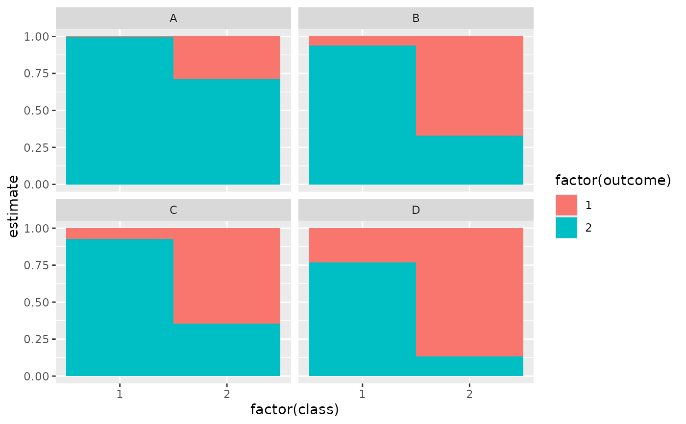
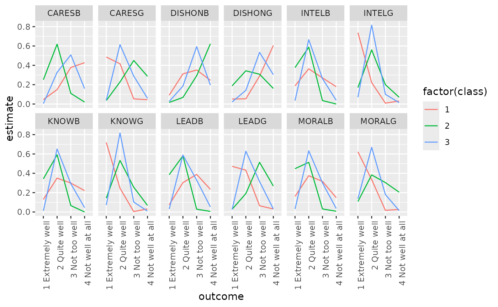

Augment accepts a model object and a dataset and adds
information about each observation in the dataset. Most commonly, this
includes predicted values in the .fitted column, residuals in the
.resid column, and standard errors for the fitted values in a .se.fit
column. New columns always begin with a . prefix to avoid overwriting
columns in the original dataset.
Users may pass data to augment via either the data argument or the
newdata argument. If the user passes data to the data argument,
it must be exactly the data that was used to fit the model
object. Pass datasets to newdata to augment data that was not used
during model fitting. This still requires that at least all predictor
variable columns used to fit the model are present. If the original outcome
variable used to fit the model is not included in newdata, then no
.resid column will be included in the output.
Augment will often behave differently depending on whether data or
newdata is given. This is because there is often information
associated with training observations (such as influences or related)
measures that is not meaningfully defined for new observations.
For convenience, many augment methods provide default data arguments,
so that augment(fit) will return the augmented training data. In these
cases, augment tries to reconstruct the original data based on the model
object with varying degrees of success.
The augmented dataset is always returned as a tibble::tibble with the
same number of rows as the passed dataset. This means that the passed
data must be coercible to a tibble. If a predictor enters the model as part
of a matrix of covariates, such as when the model formula uses
splines::ns(), stats::poly(), or survival::Surv(), it is represented
as a matrix column.
We are in the process of defining behaviors for models fit with various
na.action arguments, but make no guarantees about behavior when data is
missing at this time.
Usage
# S3 method for class 'poLCA'
augment(x, data = NULL, ...)Arguments
- x
A
poLCAobject returned frompoLCA::poLCA().- data
A base::data.frame or
tibble::tibble()containing the original data that was used to produce the objectx. Defaults tostats::model.frame(x)so thataugment(my_fit)returns the augmented original data. Do not pass new data to thedataargument. Augment will report information such as influence and cooks distance for data passed to thedataargument. These measures are only defined for the original training data.- ...
Additional arguments. Not used. Needed to match generic signature only. Cautionary note: Misspelled arguments will be absorbed in
..., where they will be ignored. If the misspelled argument has a default value, the default value will be used. For example, if you passconf.lvel = 0.9, all computation will proceed usingconf.level = 0.95. Two exceptions here are:
Details
If the data argument is given, those columns are included in
the output (only rows for which predictions could be made).
Otherwise, the y element of the poLCA object, which contains the
manifest variables used to fit the model, are used, along with any
covariates, if present, in x.
Note that while the probability of all the classes (not just the predicted
modal class) can be found in the posterior element, these are not
included in the augmented output.
See also
Other poLCA tidiers:
glance.poLCA(),
tidy.poLCA()
Value
A tibble::tibble() with columns:
- .class
Predicted class.
- .probability
Class probability of modal class.
Examples
# load libraries for models and data
library(poLCA)
#> Loading required package: scatterplot3d
library(dplyr)
# generate data
data(values)
f <- cbind(A, B, C, D) ~ 1
# fit model
M1 <- poLCA(f, values, nclass = 2, verbose = FALSE)
M1
#> Conditional item response (column) probabilities,
#> by outcome variable, for each class (row)
#>
#> $A
#> Pr(1) Pr(2)
#> class 1: 0.0068 0.9932
#> class 2: 0.2864 0.7136
#>
#> $B
#> Pr(1) Pr(2)
#> class 1: 0.0602 0.9398
#> class 2: 0.6704 0.3296
#>
#> $C
#> Pr(1) Pr(2)
#> class 1: 0.0735 0.9265
#> class 2: 0.6460 0.3540
#>
#> $D
#> Pr(1) Pr(2)
#> class 1: 0.2309 0.7691
#> class 2: 0.8676 0.1324
#>
#> Estimated class population shares
#> 0.2792 0.7208
#>
#> Predicted class memberships (by modal posterior prob.)
#> 0.3287 0.6713
#>
#> =========================================================
#> Fit for 2 latent classes:
#> =========================================================
#> number of observations: 216
#> number of estimated parameters: 9
#> residual degrees of freedom: 6
#> maximum log-likelihood: -504.4677
#>
#> AIC(2): 1026.935
#> BIC(2): 1057.313
#> G^2(2): 2.719922 (Likelihood ratio/deviance statistic)
#> X^2(2): 2.719764 (Chi-square goodness of fit)
#>
# summarize model fit with tidiers + visualization
tidy(M1)
#> # A tibble: 16 × 5
#> variable class outcome estimate std.error
#> <chr> <int> <dbl> <dbl> <dbl>
#> 1 A 1 1 0.00681 0.0254
#> 2 A 2 1 0.286 0.0393
#> 3 A 1 2 0.993 0.0254
#> 4 A 2 2 0.714 0.0393
#> 5 B 1 1 0.0602 0.0649
#> 6 B 2 1 0.670 0.0489
#> 7 B 1 2 0.940 0.0649
#> 8 B 2 2 0.330 0.0489
#> 9 C 1 1 0.0735 0.0642
#> 10 C 2 1 0.646 0.0482
#> 11 C 1 2 0.927 0.0642
#> 12 C 2 2 0.354 0.0482
#> 13 D 1 1 0.231 0.0929
#> 14 D 2 1 0.868 0.0379
#> 15 D 1 2 0.769 0.0929
#> 16 D 2 2 0.132 0.0379
augment(M1)
#> # A tibble: 216 × 7
#> A B C D X.Intercept. .class .probability
#> <dbl> <dbl> <dbl> <dbl> <dbl> <int> <dbl>
#> 1 2 2 2 2 1 1 0.959
#> 2 2 2 2 2 1 1 0.959
#> 3 2 2 2 2 1 1 0.959
#> 4 2 2 2 2 1 1 0.959
#> 5 2 2 2 2 1 1 0.959
#> 6 2 2 2 2 1 1 0.959
#> 7 2 2 2 2 1 1 0.959
#> 8 2 2 2 2 1 1 0.959
#> 9 2 2 2 2 1 1 0.959
#> 10 2 2 2 2 1 1 0.959
#> # ℹ 206 more rows
glance(M1)
#> # A tibble: 1 × 8
#> logLik AIC BIC g.squared chi.squared df df.residual nobs
#> <dbl> <dbl> <dbl> <dbl> <dbl> <dbl> <dbl> <int>
#> 1 -504. 1027. 1057. 2.72 2.72 9 6 216
library(ggplot2)
ggplot(tidy(M1), aes(factor(class), estimate, fill = factor(outcome))) +
geom_bar(stat = "identity", width = 1) +
facet_wrap(~variable)

# three-class model with a single covariate.
data(election)
f2a <- cbind(
MORALG, CARESG, KNOWG, LEADG, DISHONG, INTELG,
MORALB, CARESB, KNOWB, LEADB, DISHONB, INTELB
) ~ PARTY
nes2a <- poLCA(f2a, election, nclass = 3, nrep = 5, verbose = FALSE)
td <- tidy(nes2a)
td
#> # A tibble: 144 × 5
#> variable class outcome estimate std.error
#> <chr> <int> <fct> <dbl> <dbl>
#> 1 MORALG 1 1 Extremely well 0.622 0.0309
#> 2 MORALG 2 1 Extremely well 0.108 0.0175
#> 3 MORALG 3 1 Extremely well 0.137 0.0182
#> 4 MORALG 1 2 Quite well 0.335 0.0293
#> 5 MORALG 2 2 Quite well 0.383 0.0274
#> 6 MORALG 3 2 Quite well 0.668 0.0247
#> 7 MORALG 1 3 Not too well 0.0172 0.00841
#> 8 MORALG 2 3 Not too well 0.304 0.0253
#> 9 MORALG 3 3 Not too well 0.180 0.0208
#> 10 MORALG 1 4 Not well at all 0.0258 0.0124
#> # ℹ 134 more rows
ggplot(td, aes(outcome, estimate, color = factor(class), group = class)) +
geom_line() +
facet_wrap(~variable, nrow = 2) +
theme(axis.text.x = element_text(angle = 90, hjust = 1))

au <- augment(nes2a)
au
#> # A tibble: 1,300 × 16
#> MORALG CARESG KNOWG LEADG DISHONG INTELG MORALB CARESB KNOWB LEADB
#> <fct> <fct> <fct> <fct> <fct> <fct> <fct> <fct> <fct> <fct>
#> 1 3 Not t… 1 Ext… 2 Qu… 2 Qu… 3 Not … 2 Qui… 1 Ext… 1 Ext… 2 Qu… 2 Qu…
#> 2 1 Extre… 2 Qui… 2 Qu… 1 Ex… 3 Not … 2 Qui… 2 Qui… 2 Qui… 2 Qu… 3 No…
#> 3 2 Quite… 2 Qui… 2 Qu… 2 Qu… 2 Quit… 2 Qui… 2 Qui… 3 Not… 2 Qu… 2 Qu…
#> 4 2 Quite… 4 Not… 2 Qu… 3 No… 2 Quit… 2 Qui… 1 Ext… 1 Ext… 2 Qu… 2 Qu…
#> 5 2 Quite… 2 Qui… 2 Qu… 2 Qu… 3 Not … 2 Qui… 3 Not… 4 Not… 4 No… 4 No…
#> 6 2 Quite… 2 Qui… 2 Qu… 3 No… 4 Not … 2 Qui… 2 Qui… 3 Not… 2 Qu… 2 Qu…
#> 7 1 Extre… 1 Ext… 1 Ex… 1 Ex… 4 Not … 1 Ext… 2 Qui… 4 Not… 2 Qu… 3 No…
#> 8 2 Quite… 2 Qui… 2 Qu… 2 Qu… 3 Not … 2 Qui… 3 Not… 2 Qui… 2 Qu… 2 Qu…
#> 9 2 Quite… 2 Qui… 2 Qu… 2 Qu… 3 Not … 2 Qui… 2 Qui… 2 Qui… 2 Qu… 3 No…
#> 10 2 Quite… 3 Not… 2 Qu… 2 Qu… 3 Not … 2 Qui… 2 Qui… 4 Not… 2 Qu… 4 No…
#> # ℹ 1,290 more rows
#> # ℹ 6 more variables: DISHONB <fct>, INTELB <fct>, X.Intercept. <dbl>,
#> # PARTY <dbl>, .class <int>, .probability <dbl>
count(au, .class)
#> # A tibble: 3 × 2
#> .class n
#> <int> <int>
#> 1 1 360
#> 2 2 444
#> 3 3 496
# if the original data is provided, it leads to NAs in new columns
# for rows that weren't predicted
au2 <- augment(nes2a, data = election)
au2
#> # A tibble: 1,785 × 20
#> MORALG CARESG KNOWG LEADG DISHONG INTELG MORALB CARESB KNOWB LEADB
#> <fct> <fct> <fct> <fct> <fct> <fct> <fct> <fct> <fct> <fct>
#> 1 3 Not t… 1 Ext… 2 Qu… 2 Qu… 3 Not … 2 Qui… 1 Ext… 1 Ext… 2 Qu… 2 Qu…
#> 2 4 Not w… 3 Not… 4 No… 3 No… 2 Quit… 2 Qui… NA NA 2 Qu… 3 No…
#> 3 1 Extre… 2 Qui… 2 Qu… 1 Ex… 3 Not … 2 Qui… 2 Qui… 2 Qui… 2 Qu… 3 No…
#> 4 2 Quite… 2 Qui… 2 Qu… 2 Qu… 2 Quit… 2 Qui… 2 Qui… 3 Not… 2 Qu… 2 Qu…
#> 5 2 Quite… 4 Not… 2 Qu… 3 No… 2 Quit… 2 Qui… 1 Ext… 1 Ext… 2 Qu… 2 Qu…
#> 6 2 Quite… 3 Not… 3 No… 2 Qu… 2 Quit… 2 Qui… 2 Qui… NA 3 No… 2 Qu…
#> 7 2 Quite… NA 2 Qu… 2 Qu… 4 Not … 2 Qui… NA 3 Not… 2 Qu… 2 Qu…
#> 8 2 Quite… 2 Qui… 2 Qu… 2 Qu… 3 Not … 2 Qui… 3 Not… 4 Not… 4 No… 4 No…
#> 9 2 Quite… 2 Qui… 2 Qu… 3 No… 4 Not … 2 Qui… 2 Qui… 3 Not… 2 Qu… 2 Qu…
#> 10 1 Extre… 1 Ext… 1 Ex… 1 Ex… 4 Not … 1 Ext… 2 Qui… 4 Not… 2 Qu… 3 No…
#> # ℹ 1,775 more rows
#> # ℹ 10 more variables: DISHONB <fct>, INTELB <fct>, VOTE3 <dbl>,
#> # AGE <dbl>, EDUC <dbl>, GENDER <dbl>, PARTY <dbl>, .class <int>,
#> # .probability <dbl>, .rownames <chr>
dim(au2)
#> [1] 1785 20